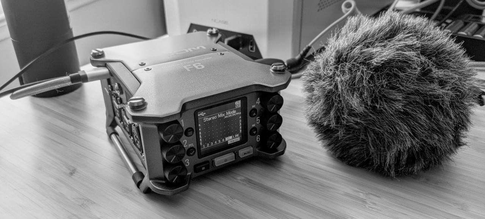

Motovlog Setup
TL;DR GoPro Hero8 + Media Mod + RODE Go Lavalier Mic / Zoom Recorder + Rode VideoMicro
이번 글에서는 제가 어떻게 영상 촬영을 하면서 녹음도 하는 지 설명하려고 합니다.
처음 모터사이클을 장만하면서 그다지 거창하게 시작할 생각은 없었습니다. 그냥 바이크를 타면서 기억에 남을 만한 좋은 영상도 찍고, 그러면서 하고싶었던 이야기도 하려고 했죠. 그런 영상들 보여주기 위해 만드는 것도 아니고, 나중에 시간이 지나 제가 다시 볼 만한 영상을 만들고 싶었습니다.
그래서 바이크 장만하면서 액션캠도 같이 장만했죠. DJI Osmo Action 인데, 드론을 만들던 회사에서 처음으로 출시한 액션캠이었죠. 거의 출시 하자마자 샀는데, 기능도 꽤 많고 좋았습니다. 바이크 핸들바에 연결해서 찍었었는데, 아무래도 제약이 많더군요. (예시: 핸들바에 두고 찍은 영상)
그래서 그 다음으로 헬멧 오른쪽에 거치해서 찍어보았습니다. 이렇게 찍으니 제가 보는 시점으로 보게 되어 좋더군요. 왼쪽 헬멧이 약간 거슬리긴 하지만, 헬멧이 오프로드 겸용 헬멧이라 턱 부분이 많이 튀어나와서, 고프로 마운트가 제대로 접착이 안되서 턱 부분에 달 수는 없었습니다.
배기음
영상이 어느정도 맞춰지다보니, 이제 소리가 거슬리더군요. 이때부터 고난의 길이 시작된 듯 합니다 ㅎㅎ. 그때에는 음성을 녹음할 생각은 전혀 없었고, 윈드노이즈가 심해서 배기음이 제대로 녹음 되지 않는 걸 고치고 싶었죠. 그래서! Zoom H1n을 장만했습니다. 참고영상 #1 / 참고영상 #2
Zoom H1n에 데드캣을 달고 바이크 재킷 뒷 주머니에 넣고 녹음했는 데, 영상과 음성을 싱크를 맞춰야 하는 불편함을 제외하면 아주 들어줄만 한 사운드가 녹음되더군요. (그러면서 눈이 높아져서 Zoom H5를 사고싶어졌죠 ㅎㅎ)
사실 이대로도 충분했습니다. 그런데 사람 마음이 간사한 게, 뭔가 점점 안좋은 부분이 보이더군요. 일단 가장 눈에 띄는 건, DJI Osmo Action의 화각이었습니다. 흔들림을 잡기 위해선 RockSteady 기능을 켜야 하는데 이러면 화각이 상당히 좁아집니다. 화각이 좁아지면 상대적으로 속도감이 덜 느껴지죠.
Reddit의 글 을 한번 보시죠.
상당한 차이가 느껴지죠?
그래서 고프로 SuperView를 지원하는 기종을 사야하나 심각하게 고민했네요. 그래도 그냥 쓰자... 하고 버티고 있는 데, 결정적으로 한가지 문제로 고프로로 넘어가게 됩니다.
음성 녹음
줌으로 녹음을 하면서 배기음은 해결되었으니, 어차피 남는 Osmo Action의 소리, 좀 더 깔끔하게 녹음해보자는 생각이 들었습니다. 이게 고난의 길일 줄은 누가 알았을까요..
몇몇 유투브 영상을 참조해서, DJI Osmo Action 3.5mm 마이크 어댑터를 주문했고요. 추가로 액션캠에 연결할 Lavalier 마이크를 저렴한 것 두세개 주문했습니다. 마이크 어댑터와 라발리에 마이크를 헬멧에 잘 장착해서 들뜬 마음으로 녹음을 했는데, DJI Osmo Action은 마이크 게인이 너무 높더군요. 오토바이 시동을 켜는 순간부터 피크를 찍어서 소리가 클리핑이 납니다.
한마디로 찢어지는 소리가 녹음이 되는 거죠.
Zoom H1n 소리는 뒷전이 되고, 이제 이걸 해결하려고 용을 씁니다.
두번째 시도는 게인이 높으니 Volume Attenuator를 달아보는 것이었습니다. 이 아마존 상품을 구입했는 데, 이걸 액션캠 옆에 붙여서 녹음해 보니, 바이크 진동이 문제가 되더군요.
저 소리 조절 놉이 진동으로 흔들거리면서 노이즈가 기가막히게 녹음이 됩니다. 오히려 직결보다 더 심각해 지더군요.
이제 DJI Osmo Action으로 할 건 다 해봤습니다. 해결되는게 없더군요. 그래서...??
고프로로 갔습니다 :)
GoPro Hero8 + Media Mod
DJI Osmo Action을 넘기고 고프로 Hero8에 Media Mod로 넘어왔습니다. 3.5mm 마이크 어댑터보다 좀 더 포트가 많기도 하고, 가랑비에는 더 잘 버틸 것 같아서 Media Mod를 선택했는 데, 부피도 생각보다 작아서 마음에 듭니다.
'이젠 정말 되겠지!' 하는 들뜬 마음으로 녹음을 해 보았는데....
참조 영상. 영상에서 들리는 것 같이 계속 틱틱거리는 소리가 녹음이 됩니다. 일단 저 영상은 그 소리를 많이 줄이려고 노이즈 감소도 시키고, Zoom H1n 소리도 배경으로 넣고 해서 많이 티가 나지는 않는 데, 날것 그대로 들어보면 틱틱 거리는 소리가 너무 거슬리게 들리더군요.
'이것도 안되는 건가..' 라는 좌절과 함께 인터넷을 좀 검색해 보니, 마이크 문제라는 글을 몇개 접했습니다. 마이크마다 게인과는 상관 없이 최대로 받아들일 수 있는 볼륨이 있는 데, 그걸 Maximum Sound Pressure Level(SPL)이라고 하더군요. 싸구려 마이크는 그 수치를 공개하지도 않을 뿐더러, 너무 안좋아서, 시끄러운 환경에서는 게인과 상관없이 클리핑이 난다는 거였습니다.
'이거구나!' 란 생각이 들더군요. 당장! 바로! B&H에서 눈물을 머금고 비싼, SPL이 110db까지 지원되는 RODE Go 마이크를 주문했습니다.
도착 후 연결해서 동네 한바퀴 돌아보며 찍어보니, 눈물이 납니다. 내가 이 고생을 해가며 결국 해결했구나. 마이크 하나 좋은거 사면 되는것을 이 고생을 했구나... 눈물이 납니다. 그래도 깔끔하게 녹음되고 배기음은 Zoom H1n으로 하면 되고, 이제 신이 납니다.
Latest Setup
그래서 결론은 고프로에 Media Mod에 로드 마이크입니다. 이렇게 바꾸면서 액션캠 위치도 턱으로 옮겼습니다. 불안정한 건 Sugru 를 사서 틈새를 메꾸니 단단하게 고정되더군요. 좀 더 제 시점이랑 비슷해서 (살짝 아래긴 하지만), 마음에 듭니다.
Exhaust Sound
여기에서 한가지 더 업그레이드를 한 게 있습니다. Zoom H1n으로 녹음을 하다보니, 마이크가 일체되어 있어서 마이크를 가방에 넣으니 녹음하기가 까다롭더군요. 가방이 바람에 조금씩 펄럭이며, 바람도 들어오고 해서, 윈드노이즈나, 마이크가 가방에 쓸리는 소리를 잡기까 힘들었습니다. 그렇다고 밖에 고정해서 두기에는 부피가 작은 편도 아니구요.
그것보다 더 불편했던 점은, 인풋 게인을 잘 조절해서 넣어야 한다는 거죠. 이게 4~6 사이정도가 적당한데 그 사이가 조금만 조절해도 많이 바뀌어서, 클리핑이 나거나 아니면 아예 소리가 작거나 하는 경우가 많더군요.
그러다 어느날 H1n을 떨어트려서 뒷 커버가 박살이 났습니다. 플라스틱이라 충격에 찌그러지지 않고 깨지더군요. :) 이때다 싶어서 그동안 눈여겨봤던 필드레코더 끝판왕으로 넘어갔습니다.

바로 Zoom F6 인데요. 이 필드레코더는 마이크가 내장되어 있지는 않아서 예전에 장만해 둔 Rode VideoMicro 를 사용하고 있습니다. F6는 다른 사운드레코더와는 확연히 다른 점이 하나 있습니다. 지금까지 제가 알기론 유일하게 Dual ADC에 32bit floating point recorder가 지원되는 레코더로 알고있습니다.
이게 뭐가 좋은가 하면, 일단 32비트 부동소수점 녹음은, 지수(exponential)로 표현하기 때문에 표현할 수 있는 범위가 매우 큽니다. 32비트 레코딩을 지원하는 기계는 꽤 있는데 휴대용으론 tentacle sync e 가 있고, zoom f2도 최근에 32비트 녹음을 지원하며 출시되었죠.
F6는 거기에 dual ADC를 써서 마치 HDR로 사진을 찍듯이 소리를 큰 범위, 작은 범위로 나눠서 녹음합니다. 그걸 뒷단에서 믹싱해서 다이나믹 레인지가 큰 소리를 잘 캐치할 수 있습니다.
그래서, 32비트 녹음을 하면 인풋 게인 조절이 비활성화 됩니다. 언제든 후처리로 소리를 키워도 노이즈가 올라오지 않고, 클리핑된것처럼 보여도 볼륨 낮추면 정상적인 소리로 돌아옵니다.
F6는 가방에 넣고 케이블로 시트 밑에 장착한 마이크에 연결하여 녹음하는 데, 정말 놀랍더군요. 게인 조절 실수할 걱정도 없어서 마음이 놓입니다.
좀 더 편하게 한다면 비디오와 싱크를 맞추면 좋겠지만, 그러려면 타임코드 동기화 장치를 달아야 하니, 그건 나중에 고민해 볼까 합니다.